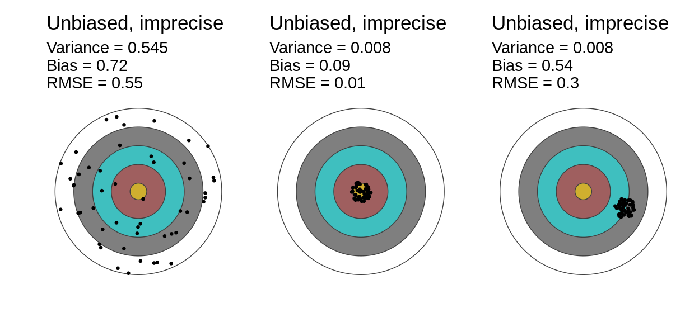

8.1 Sampling
Sampling is the process by which units are selected from the population to be studied. Some sampling procedures involve randomization while others do not. Sometimes perhaps even usually randomized sampling procedures break in ways that turn them into nonrandomized designs. Whether a sampling procedure is randomized or not has large implications for the answer stratey. Randomized designs support design-based inference, which refers to the idea that we rely on known features of the sampling process when producing population-level estimates much more about this in the next chapter on Answer strategies. When randomization breaks down (e.g., if the design encounters attrition) or if a nonrandomized design is used, then we have to fall back on model-based inference to generalize from the sample to the population. Model-based inference relies on researcher beliefs about the nature of the uncontrolled sampling process in order to make inferences about the population. When possible, design-based inference is preferable, because its easier to be correct about about the features of controlled processes than uncontrolled ones. That said, when randomly sampled individuals fail to respond or when we seek to make inferences about new populations, we must apply model-based inference even if the data are the result of a random process.
Why would we ever be content to study a sample and not the full population? The first and best explanation is cost: its expensive and time-consuming to conduct a full census of the population. Even well-funded research projects face this problem, since money and effort spent answering one question could also be spent answering a second question. We tend to sample rather than measure every unit in the population because we face opportunity costs as well. A second reason reason to sample is the diminishing marginal returns of additional data collection. Increasing the number of sampled units from 1,000 to 2,000 will greatly increase the precision of our estimates. Moving from 100,000 to 101,000 will improve things too, but the scale of the improvement is much smaller.
8.1.1 Randomized sampling designs
Owing to the natural appeal of design-based inference, we start off with randomized designs before proceeding to nonrandomized designs. Randomized sampling designs typically begin with a list of all units in a population, then choose a subset to sample using a random process. These random processes can be simple (every unit has an equal probability of inclusion) or complex (first we select regions at random, then villages at random within selected regions, then households within selected villages, then individuals within selected households).
This table describes XX common forms of sampling. The most basic form is simple random sample, also called coin flip or Bernoulli random sampling. Under simple random assignment, all units in the population have the same probability \(p\) of being included in the sample. It is sometimes called coin flip random sampling because it is as though for each unit, we flip a weighted coin that has probability \(p\) of landing heads-up. While quite straightforward, a drawback of simple random sampling is that we cant be sure of the number of sampled units in advance. On average, well sample \(N*p\) units, sometimes slightly more units will be sampled and sometimes fewer.
Complete random sampling addresses this problem. Under complete random sampling, exactly \(n\) of \(N\) units are sampled. Each unit still has an inclusion probability of \(p = n/N\), but in contrast to simple random sampling, we are guaranteed that the final sample will be of size \(n\).8. Complete random sampling represents an improvement over simple random sampling because it rules out samples in which more or fewer than \(N*p\) units are sampled. One circumstance in which we might nevertheless go with simple random sampling is when the size of the population is not known in advance and sampling choices have to be made on the fly.
Complete random sampling solves the problem of fixing the total number of sampled units, but it doesnt address the problem that the total number of units with particular characteristics will not be fixed. Imagine a population with \(N_{y}\) young people and \(N_{o}\) old people. If we sample exactly \(n\) from the population \(N_{y} + N_{o}\), the number of sampled young people (\(n_y\)) and sampled old people (\(n_{o}\)) will bounce around from sample to sample. We can solve this problem by conducting complete random sampling within each group of units. This procedure goes by the name stratified random sampling, since the sampling is conducted separately within the strata of units.9 In our example, our strata were formed by a dichotomoous grouping of people into young and old categories, but in general, the sampling strata can be formed by any information we have about units before they are sampled. Stratification offers at least three major benefits. First, we defend against sampling surprisingly too few units in some stratum by bad luck. Second (as discussed in the chapter on answer strategies) stratification tends to produce lower variance estimates of most inquiries. Finally, stratification allows researchers to oversample subgroups of particular interest.
Stratified sampling should not be confused with cluster sampling. Stratified sampling means that a fixed number of units from a particular group are drawn into the sample. Cluster sampling means that units from a particular group are brought into the sample together. For example, if we cluster sample households, we interview all individuals living in a sampled household. Clustering introduces dependence in the sampling procedure if one member of the household is sampled, the other members are also always sampled. Relative to a complete random sample of the same size, cluster samples tend to produce higher variance estimates. Just as the individual sampling designs, cluster sampling comes in simple, complete, and stratified varieties with exactly parallel logics and motivations.
Lastly, we turn to multi-stage random sampling, in which we conduct random sampling at multiple levels of a heirarchically-structured population. For example, we might first sample regions, then villages within regions, then households within villages, then individuals within households. Each of those sampling steps might be stratified or clustered depending on researcher goals. The purpose of a multi-stage approach is typically to balance the logistical difficulties of visiting many geographic areas with the relative ease of collecting additional data once you have arrived.
Table XXX collects all of these kinds of random sampling together and offers an example of functions in the randomizr package you can use to conduct these kinds of sampling.
| Design | Description | Randomizr function |
|---|---|---|
| Simple random sampling | Coin flip or Bernoulli random sampling. All units have the same inclusion probability p | simple_rs(N = 100, p = 0.25) |
| Complete random sampling | Exactly n of N units are sampled, and all units have the same inclusion probability n/N | complete_rs(N = 100, n = 40) |
| Stratified random sampling | Complete random sampling within pre-defined strata. Units within the same strata have the same inclusion probability n_s / N_s, but units in different strata might have different inclusion probabilities | strata_rs(strata = regions) |
| Cluster random sampling | Whole groups of units are brought into the sample together. | cluster_ra(clusters = households) |
| Stratifed cluster sampling | Cluster random sampling within strata | strata_and_cluster_rs(strata = regions,clusters = villages) |
| Multi-stage random sampling | First clusters, then units within clusters | cluster_ra(clusters = villages); strata_ra(strata = villages |
Figure XXX gives a graphical interpretation of each of these kinds of random sampling. Here, we imagine a population of 64 units with two levels of heirarchy. For concreteness, we can imagine that the units are indiviudals nested within 16 households of four people each and the 16 households are nested within four villages of four people each. Starting at the top left, we have simple random samping at the individual level. The inclusion probability was set to 0.5, so on average, we ought to sample 32 people, but in this particular draw, we actually sampled only 29. Complete random sampling (top center), fixes this problem, so exactly 32 people are sampled but these 32 are unevenly spread across the four villages. This is addressed with stratified sampling here we sample exactly 8 people at random from each village of 16 total people.
Moving down to the middle row of the figure, we have three approaches to clustered random sampling. Under simple sampling at the cluster, each cluster has the same probability \(p\) of inclusion in the sample, so on average we will sample eight clusters. This time, we only sampled seven, this problem can again be fixed with complete random sampling (center facet), but again we have an uneven distribution across villages. Stratified cluster sampling ensures that exactly two households from each village are sampled.
The bottom row of the figure illustrates some approaches to multistage sampling. In the bottom left panel, we conduct a simple random sample of individuals in each sampled cluster. In the bottom center, we draw a complete random sample of indiviudals in each sampled household. And in the bottom left, we stratify on an individual level characteristic we always draw one individual from each row of the household. Row could refer to the age of the household members. This doubly-stratified multistage random sampling procedure ensures that we sample two households from each village and within those households, one older member and one younger member.

8.1.2 Nonrandomized sampling designs
Because nonrandomized sampling procedures are defined by what they dont do they dont use randomization a hugely varied set of procedures could be described this way. Well consider a just a few common ones, since the idiosyncracies of each approach are hard to systemetize.
Convenience sampling refers to the practice of gathering units from the population in the least expensive way available to you. Convenience sampling is a good choice when generalizing to an explicit population is not a main goal of the design, for example when a sample average treatment effect is a theoretically-important inquiry. For many decades, social science undergraduates were the most abundant data source available to academics and many important theoretical claims have been established on the basis of experiments conducted with such samples. In recent years, however, online convenience samples like Mechanical Turk, Prolific, or Lucid have mostly supplanted undergraduates as the convenience sample of choice. In other (mostly nonexperimental) circumstances, however, convenience sampling is likely to lead to badly biased estimates. For example, cable news shows often conduct viewer polls that should not be taken at all seriously. While such polls might promote viewer loyalty (and so might be worth doing from the cable executives perspective) they do not provide credible evidence about what the population at large thinks or believes.
Many types of qualitative and quantitative research involve convenience sampling. Archival research often involves a convenience sample of documents on a certain topic that exist in an archive. The question of how these documents differ from those that would be in a different archive, or how the documents available in archives differ from those that do not ever make it into the archive importantly shapes what we can learn from them (Aliza Luft paper cite). With the decline of telephone survey response rates (cite), researchers can no longer rely on random digit dialing to obtain a representative sample of people in many countries, and instead must rely on convenience samples from the internet or panels who agree to have their phone numbers in a list. Sometimes, reweighting techniques in the answer strategy can, in some cases, help recover estimates for the population as a whole if sampling if a credible model of the unknown sampling process can be agreed upon.
Next, we consider purposive sampling. Purposive is a catch-all term for rule-based sampling strategies that do not involve random draws but also are not purely based on convenience and cost. A common example is quota sampling. Sampling purely based on convenience often means we will end up with many units of one type but very few of another type. Quota sampling addresses the problem by continuing to search for subjects until target counts (quotas) of each find of subject are found. Loosely speaking, quota sampling is to convenience sampling as stratified random sampling is to complete random sampling: it fixes the problem that not enough (or too many) subjects of particular types are sampled by employing specific quotas. Importantly, however, we have no guarantee that the sampled units within type are representative of that type over all: quota samples are within-stratum convenience sampes.
A second common form of purposive sampling is respondent-driven sampling, which is used to sample from hard-to-reach populations such as HIV-positive needle users. RDS methods often begin with a convenience sample and then systematically obtain contacts for other units who share the same characteristic in order the build a large sample.
Each of these three nonrandom sampling procedures convenience, quota, and respondent-driven are illustrated in Figure XXX. Imagining that village A is easier to reach, we could obtain a convenience sample by contacting everyone we can reach in village A before moving on to village B. This process doesnt yield good coverage across villages and for that we can turn to quota sampling. Under this quota sampling scheme, we talk to the five people who are easiest to reach in each of the four villages. Finally, if we conduct a respondent-driven sample, we select one seed unit in each village, and that person recruits their four closest friends (who may or may not reside in the same village).

8.1.3 Sampling designs for qualitative research
Case selection is another term for a sampling strategy. In case study research, whether qualitative or quantitative, the way you select the (typically small) set of cases is of great importance, and considerable attention has been paid to developing purposive case selection methods. Mills (cite) method of difference is a common case selection procedure, in which cases are selected that have different outcomes and the cases are inspected to identify characteristics that differ that may have led to the divergence. Lieberman (2005) proposes a method for selecting cases for indepth study from an initial regression study: cases on the regression line, well-predicted by it, are selected to determine whether the hypothesized causal relationship took place in those cases. Off-the-line cases, that are not well-predicted, are also selected to determine what factors may be left out of the regression model that provide alternative mechanisms. In each method, the inferential goal determines how cases are selected. Research design diagnosis can also help compare the efficiency and bias of these methods to select cases.
Selection on the dependent variable is purposive sampling method that has recieved substantial attention. The procedure is to select positive outcomes units in which an event such as a revolution took place, for example and study what led to that outcome. Geddes (XXXX) lays out the problem in this method for case study research: we cannot know whether the factors identified from investigating these cases led to the event, because we do not know whether those factors are also present in units where the outcome did not happen. If the factor is present in both, it is unlikely to have caused the positive outcome. The same problem plagues observational quantitative research. Ramsay et al.(XXXX) discuss the bias that results from studying the factors predicting suicide terrorism by only looking at observations where suicide terrorism occurred. In order to avoid these problems accidentally creeping into our research, it is important to diagnose the bias of our designs and not just the efficiency.
8.1.4 Choosing among sampling designs
In short, the choice of sampling strategy depends on features of the model and the inquiry, and different sampling strategies can be compared in terms of power and RMSE in design diagnosis. The model defines the population of units we are interested in making inferences about, and the target population of the sampling strategy should match that as much as possible. The model also points us to important subgroups (defined by nodes or endogenous variables) that we may wish to stratify on, depending on the variability within those subgroups. Whether we select convenience, random, or purposive sampling depends on our budget and logistical constraints as well as the efficiency (power or RMSE) of the design. If there is little bias from convenience sampling, we will often want to select it for cost reasons; if we cannot obtain a convenience sample that has the right composition, we may choose a purposive method that ensures we do. The choice between simple and stratified sampling comes down to the inquiry and to a diagnosis of the RMSE: when the inquiry involves a comparison of subgroups, we will often select stratified sampling. In either, a diagnosis of alternative designs in terms of power or RMSE will guide selection.
Sampling, like all data strategies, is an intervention in the world by researchers. As a result, it may have independent causal effects on outcomes. As we will see in the next section, there is no deep difference between sampling and treatment assignment, because in each case we are randomly sampling from two potential outcomes. In treatment assignment, we are assigning units to a treatment group and a control group, and obtaining a sample of the treated potential outcome and a second random sample of the control potential outcome. In random sampling, we are assigning units to be sampled or to not be sampled. We obtain one sample of the sampled potential outcome. However, the non-sampled potential outcome exists conceptually, and may differ from the sampled potential outcome. The act of including units in the sample may change outcomes, for example if you are selected to participate in a medical trial you believe you are going to receive better care and a placebo effect changes your health condition. A research design in which you conduct an experiment on sampled units, but also unobtrusively measure outcomes in nonsampled units could be used to estimate the effect of inclusion in the sample. This design would provide a random sample of the nonsampled potential outcome.
were often interested in extrapolating from our sample to the population the sample was drawn from, or to new populations. there are design-based inference solutions for making inferences about the population you directly sampled from, but model-based inference will be required to extrapolate to new populations and the same population in another time period.
8.1.5 Example: Wang et al. (2015)
Xbox forecasting of elections
References
Wang, Wei, David Rothschild, Sharad Goel, and Andrew Gelman. 2015. Forecasting Elections with Non-Representative Polls. International Journal of Forecasting 31 (3): 98091.
To convince yourself of the difference between simple and complete random sampling, run
table(simple_rs(N = 100, prob = 0.5))a few times and compare the results withtable(complete_rs(N = 100, n = 50))To convince yourself of the difference between complete and stratified sampling, run
age <- rep(c("Y", "O"), 50); table(age, complete_rs(N = 100, n = 50))a few times and compare the results withtable(age, strata_rs(strata = age))